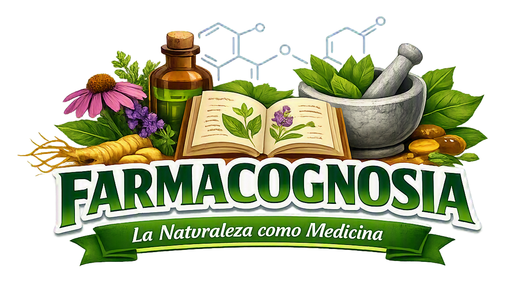
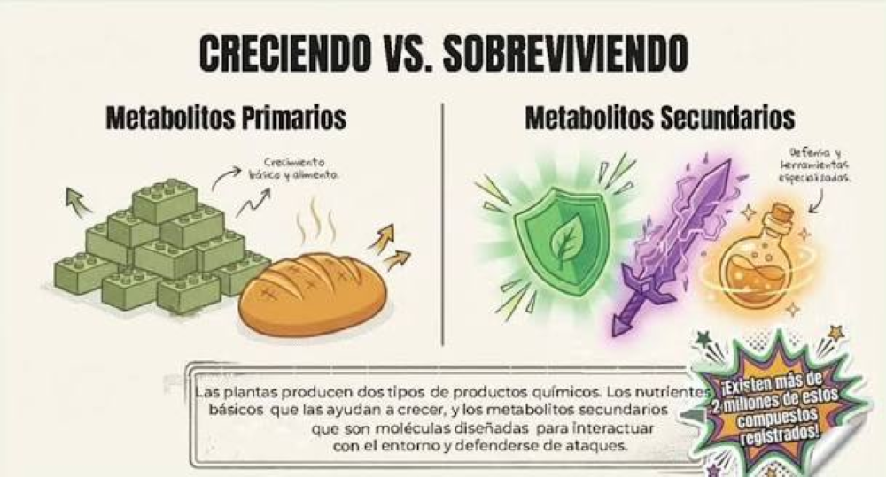
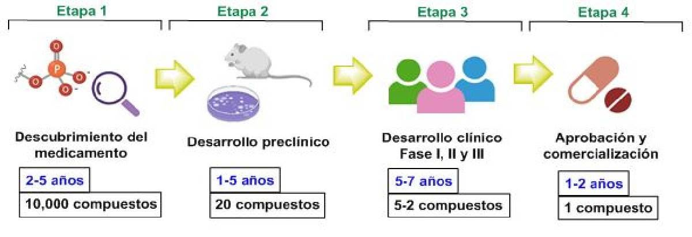
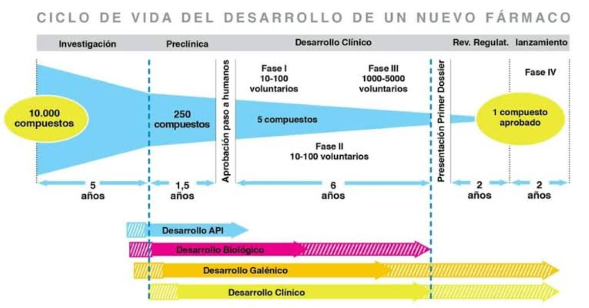

Tema 1: Origen y Desarrollo de Medicamentos de Origen Animal
| Característica | Metabolitos Primarios | Metabolitos Secundarios |
|---|---|---|
| Función | Crecimiento y desarrollo | Homeostasis del organismo |
| Cantidad | Grandes cantidades | Pequeñas cantidades |
| Ejemplos | Aminoácidos, glucosa, ATP | Omega-3, CLA, toxinas de venenos |
| Diversidad | Limitada | Amplia diversidad estructural |
| Origen | Metabolismo primario | Derivados de metabolitos primarios |

Clasificación de metabolitos según su función biológica

Etapas del desarrollo farmacológico desde el descubrimiento hasta la farmacovigilancia

Porcentaje de éxito en cada fase del desarrollo clínico
| Propiedad | Descripción | Ejemplo |
|---|---|---|
| Antioxidantes | Neutralizan radicales libres | Coenzima Q10 |
| Antiinflamatorias | Reducen inflamación | Omega-3 (EPA/DHA) |
| Antimicrobianas | Combaten microorganismos | Péptidos de veneno |
| Anticancerígenas | Inhiben crecimiento tumoral | CLA |
| Antimutagénicas | Previenen mutaciones | Péptidos bioactivos |
Haz clic en cada nodo para desplegar u ocultar sus ramas.
Haz clic en la tarjeta para voltearla y ver la respuesta. Luego califícate con honestidad.
Uso de la información de clase para resolver problemas en medicina y farmacología:
a) El captopril se derivó del péptido potenciador de bradiquinina (BPP) encontrado en el veneno de Bothrops jararaca, una serpiente brasileña.
b) Fue el primer medicamento derivado de toxina animal aprobado para uso humano, marcando el inicio de una nueva era en el descubrimiento de fármacos basados en venenos.
c) El captopril es un inhibidor de la enzima convertidora de angiotensina (IECA). Bloquea la conversión de angiotensina I (inerte) a angiotensina II (potente vasoconstrictor), produciendo vasodilatación y reduciendo la presión arterial.
Fase I: 20-100 voluntarios sanos. Evaluar seguridad, farmacocinética y efectos adversos. Tasa de éxito: 70%.
Fase II: 100-500 pacientes con dolor. Determinar eficacia, dosis terapéutica y frecuencia. Tasa de éxito: 35%.
Fase III: 500-3000 pacientes. Confirmar eficacia, efectos a largo plazo y comparar con otros analgésicos. Tasa de éxito: 25-30%.
Fase IV: Farmacovigilancia post-aprobación con >1000 personas para monitorear riesgos y beneficios a largo plazo.
a) Los omega-3 son metabolitos secundarios: se producen en pequeñas cantidades y tienen funciones de homeostasis (antiinflamación, protección cardiovascular).
b) Propiedades bioactivas:
c) Fuentes principales: pescados grasos (salmón, atún, sardina), krill y microalgas marinas.
Mecanismo: La ziconotide es una ω-conotoxina sintética que bloquea selectivamente los canales de calcio tipo N (Cav2.2) en neuronas del asta dorsal medular.
Ventajas:
Limitación: Requiere administración intratecal por bomba implantable (no atraviesa barrera hematoencefálica por vía oral).
Técnicas para recordar nombres de fármacos, fuentes animales y mecanismos de acción:
Frase: "La BEE (abeja) pica pero las serpientes curan"
Frase: "Siempre Es Conveniente Fiscalizar"
Frase: "El CC (código civil) protege a los animales que curan"
Frase: "Las 5 A de los superpoderes naturales"
Frase: "HELD (sostenido) en el tiempo por resistencia a DPP-4"
Frase: "La Hirudina Baja la Dureza (coagulación)"
"Primarios crecen, secundarios protegen"
"Omega-3 del pez, CLA de la vaca"
"Veneno que cura, toxina que salva"
"De la naturaleza, la farmacia se alaba"
Haz clic en cada término para ver su definición:
Error: "El omega-3 es un metabolito primario porque es importante"
Error: "Fase I y Fase III tienen poblaciones similares"
Error: "El captopril es el veneno purificado de Bothrops jararaca"
Error: "La Fase IV es antes de la aprobación del fármaco"
Error: "La Fase II tiene mayor tasa de éxito que la Fase I"
Error: "Todos los compuestos de origen animal son péptidos o proteínas"
Error: "El exenatide viene de una serpiente"
Pon a prueba tus conocimientos: en cada ciclo se muestran 10 preguntas al azar de una base de 30. Cada vez que entras a esta pestaña se sortea un nuevo ciclo.